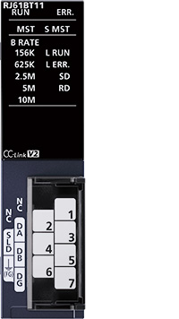
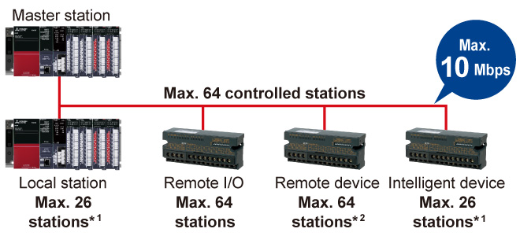

Controllers MELSEC iQ-R Series Fitur Produk -Jaringan-

Modul master/lokal sistem CC-Link
Modul ini memungkinkan transmisi data bit berkecepatan tinggi seperti status ON/OFF dan data kata seperti informasi analog antar perangkat.

Fitur<sup>Konfigurasi sistem yang memenuhi persyaratan kontrol</sup>
- Perangkat mitra yang luas
- CC-Link menggabungkan banyak perangkat lapangan berbeda yang dapat dikonfigurasi menjadi jaringan komunikasi hemat kabel
- Menggunakan jaringan perangkat jarak jauh mode, memungkinkan untuk menghubungkan hingga 64 perangkat jarak jauh, seperti modul I/O analog

- *1.Mode jaringan jarak jauh
- *2.Mode jaringan perangkat jarak jauh
Spesifikasi<sup>Spesifikasi modul master/lokal sistem CC-Link</sup>
| Item | RJ61BT11 |
|---|---|
| Compatible network | CC-Link |
| Communication speed (bps) | 156k/625k/2.5M/5M/10M |
| Maximum stations per network*3 | 65 |
| Network topology*4 | Bus (RS-485) |
| Connection cable | Ver.1.10-compatible CC-Link dedicated cable |
| Max. station-to-station distance (m) | - |
| Overall cable distance (m) | 100 (10 Mbps)…1200 (156 kbps) |
| Maximum link points per network | |
| Remote input (RX), remote output (RY) | 8192 points |
| Remote register (RWr, RWw) | 2048 points |
| Link relay (LB) | - |
| Link register (LW) | - |
- *3.Termasuk stasiun induk.
- *4.Gunakan sakelar Ethernet terkelola yang mendukung CC-Link IE TSN (kelas B) yang direkomendasikan oleh CC-Link Partner Association untuk modul induk/lokal CC-Link IE TSN (RJ71GN11-T2) dan modul induk/lokal CC-Link IE TSN Plus (RJ71GN11-EIP).